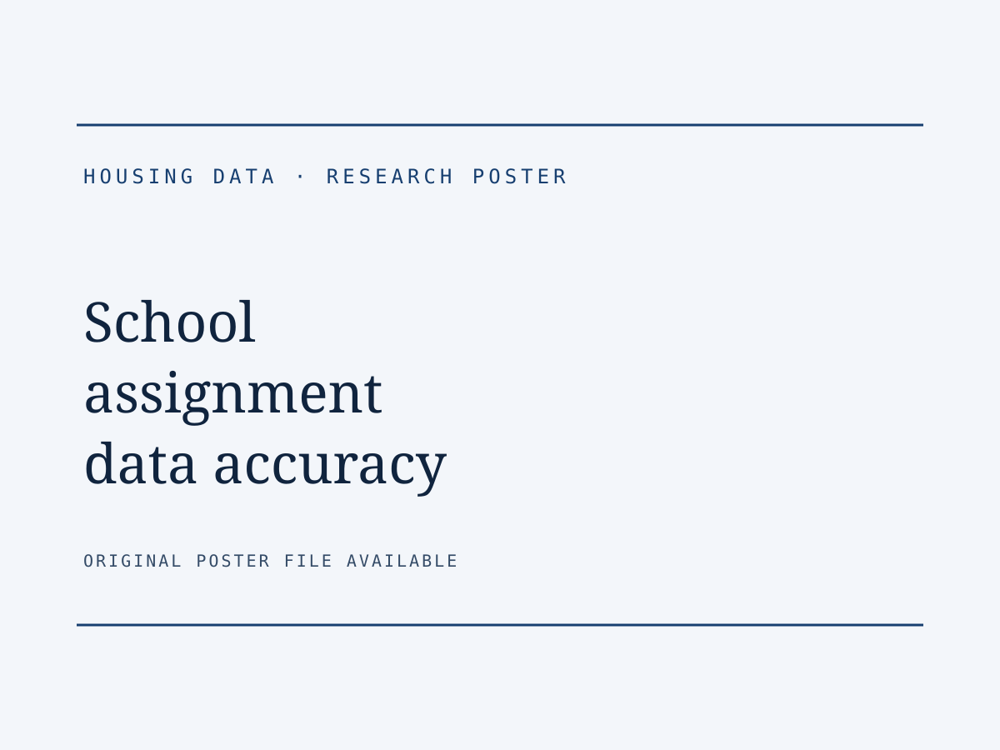

Collaborative research · 2026
School Assignments in Home Listings
A spatial audit of school-assignment information in multiple-listing data, comparing listed school assignments with spatially verified boundaries. Presented at the 2026 SEDAAG meeting in Alabama.

The Question
School assignments can influence how families understand a home listing. This collaborative project examines whether assignment details in multiple-listing data match school attendance boundaries when checked spatially.
My Contribution
I contributed to geospatial validation and research communication with a team of University of Richmond researchers. The current project summary reports 12,524 home sales across eight Richmond-region jurisdictions, with approximately 12.5% containing at least one inconsistency with spatially verified assignments.
The supplied SEDAAG 2026 presentation lists 12,489 residential listings for its analysis. These counts are retained as reported in their source materials and should not be read as identical denominators.
The study examined sales from August 2025 through June 2026. School-rating comparisons were exploratory; the analysis did not find consistent evidence that discrepancies systematically favored higher-rated schools across all measures. The work describes its study area and period, not all U.S. listings.
Poster and Presentation Materials
The user-supplied PowerPoint poster is available below as the original presentation file. A clean project cover is used above instead of presenting the source poster as a redesigned or polished export.
Related Work
The MLS study and my SOC 379 video on medical racism address different topics, but both inform my interest in how institutions and public-facing information shape access and opportunity. The SOC 379 video and the Live and Learn project show related parts of that broader interest.